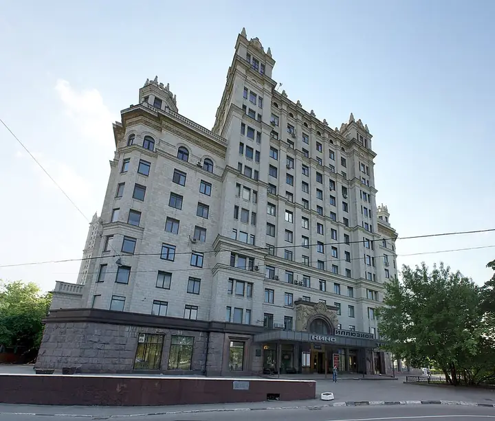
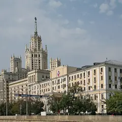

Фото: Okorok, CC BY-SA 3.0 · Wikimedia Commons
Кинотеатр · ЦАО
Иллюзион
Кинотеатр Госфильмофонда в сталинской высотке: классика и редкие фильмы на большом экране.
- ₽ · до 1 500 ₽ на человека
- в 2 планах
Позвать сюда: ИллюзионОткрыть в каталоге: ИллюзионМаршрут до места: Иллюзион
Адрес и детали
- Адрес
- Котельническая наб., 1/15
Открыть на Яндекс Картах (в новой вкладке) - Метро
- м. Таганская
- Округ
- Центр (ЦАО)
- Цена
- до 1 500 ₽ на человека
- Телефон
- +7 (495) 915-43-53
Планы с этим местом 2

- Высотка на Котельнической · Архитектура · м. Таганская
- 5 минут пешкомИллюзион · Кинотеатр
- 1 минута пешкомЛолита · Ресторан
Сталинская высотка у Яузы, классика в «Иллюзионе» и ужин в «Лолите».
Открыть план: Высотка и старое киноПозвать сюда: Высотка и старое кино
Фото: W. Bulach, CC BY-SA 4.0 · Wikimedia Commons
- Парк «Зарядье» · Парк · м. Китай-город
- 20 минут пешкомИллюзион · Кинотеатр
Вид на Кремль с моста над рекой, а через 20 минут прогулки — классика на большом экране в высотке.
Открыть план: Парящий мост и старое киноПозвать сюда: Парящий мост и старое кино
Фото: Alina Vozna, CC BY-SA 4.0 · Wikimedia Commons

Похожие рядом
Что ещё рядом
- ЛолитаРесторан · ≈ 1 минута пешком
- Тессинский мостПешеходный мост через Яузу · ≈ 2 минуты пешком
- Restaurant by Deep Fried FriendsРесторан-бар · ≈ 4 минуты пешком
- Высотка на КотельническойАрхитектура · ≈ 5 минут пешком
- ОрбитаБар-ресторан в особняке · ≈ 5 минут пешком
 KGallery BookcafeКнижный и кофейня в усадьбе · ≈ 6 минут пешком
KGallery BookcafeКнижный и кофейня в усадьбе · ≈ 6 минут пешком
Как позвать
- Выбери план, место или событие — в карточке адрес, цены и маршрут в Яндекс Картах.
- Нажми «Позвать сюда» — соберётся приглашение-игра для свидания или голосование для компании.
- Отправь ссылку в любой мессенджер: тебе ответят, а компания отметит, куда и когда может. Бесплатно и без регистрации.